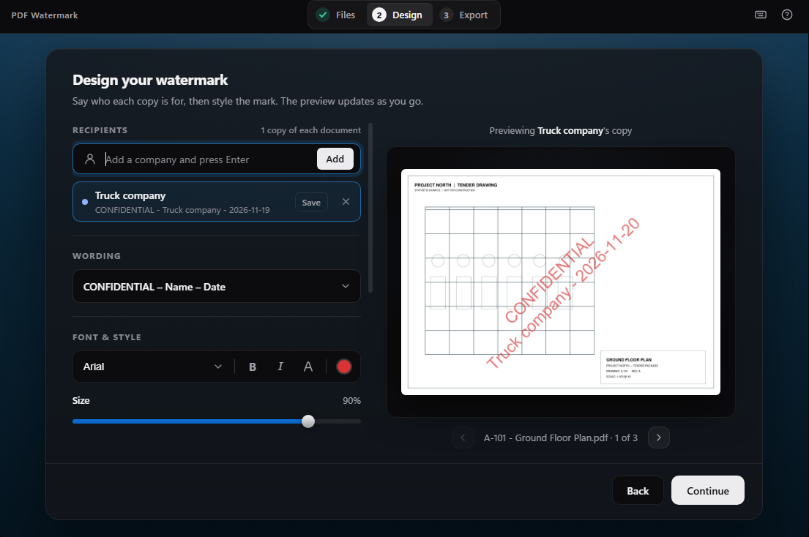

Offline PDF tool for Windows
Batch watermark
your PDFs.
Send the same drawings or reports to different people. Put each recipient’s name on every page of their own copy.
Download for WindowsFree · Windows 10 & 11 · Portable .exe


Inside the app
From folder
to finished set.
Explore the screens from a three-drawing tender pack.



FAQ
Before you
download.
Where are my PDFs processed?
On your computer. Once downloaded, the app runs offline and requires no account. It writes new PDFs and keeps your originals intact.
Can I watermark an entire drawing set?
Yes. Add a folder and the app finds PDFs in its subfolders. Each recipient gets a separate set with the original folder structure. Watermarks scale to each page, including mixed drawing and report sizes.
Which watermark styles are available?
Choose diagonal, tiled or positioned text. Adjust the font, colour, size and opacity, then check the result on a page before exporting.
How do I run it on Windows?
Download PDF-Watermark-Windows.exe and open it on Windows 10 or 11. The app is portable. You can find release notes and checksums on the GitHub release page.